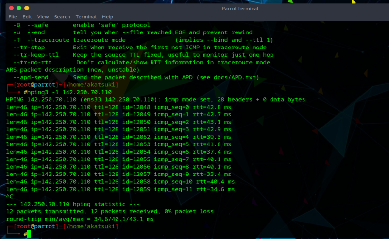

1. ICMP ping
hping3 -1 142.250.70.110

2. ACK scan on port 80
hping3 -A 142.250.70.110 -p 80

3. UDP scan on port 80
hping3 -2 142.250.70.110 -p 80

It returns an ICMP port unreachable massage if it fnds the port closed and does not return a massage if the port is open
4. Firewalls and Timestamps
hping3 -S 142.250.70.110 -p 80 --tcp-timestamp

5. SYN scan on port 50-60
hping3 -8 50-60 -s 142.250.70.110 -V

6. Collecting Initial Sequence Number
hping3 -8 50-60 -s 142.250.70.110 -Q -p 139
7. FIN, PUSH and URG scan on port 80
hping3 -F -P -U 142.250.70 -p 80

if port 80 is open, you will not receive a response. if the port is closed, hping will return an RST response.
8. Scan entire subnet for live host
hping3 -1 192.168.0.x --rand-dest -I eth0
9. Intercept all traffic containing HTTP signature
hping3 -9 HTTP -I eth0
10. SYN flooding a victim
hping3 -S 192.168.13.147 -a 192.168.0.104 -p 22 --flood

The attacker employs TCP SYN flooding techniques using spoofed IP addresses to perform a DOS attack.